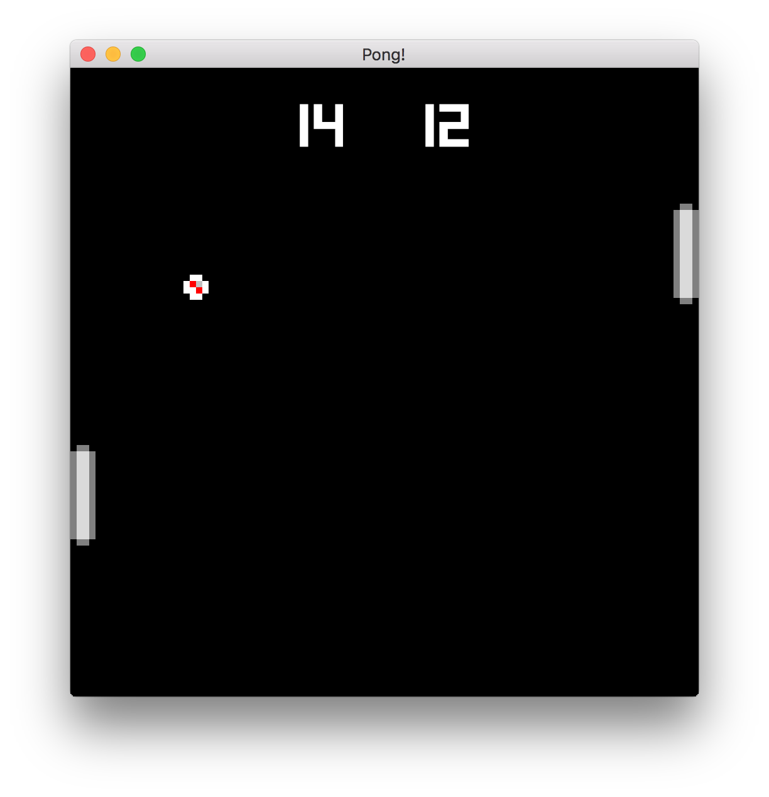

Winning Rounds and Keeping Score
Our last chapter ended on a bit of a cliffhanger. What happens when our ball reaches the left or right edge of the screen? It just keeps going! 😦
In this chapter, we'll fix that by putting the ball back into play after it leaves either side of the arena. We'll also add a scoreboard and keep track of who's winning and losing.
Winning and Losing Rounds
So let's fix the big current issue; having a game that only works for one round isn't very fun. We'll add a new system that will check if the ball has reached either edge of the arena and reset its position and velocity. We'll also make a note of who got the point for the round.
First, we'll add a new module to systems/mod.rs
pub use self::winner::WinnerSystem;
mod winner;
Then, we'll create systems/winner.rs:
extern crate amethyst;
mod pong {
use amethyst::ecs::prelude::*;
pub struct Ball {
pub radius: f32,
pub velocity: [f32; 2],
}
impl Component for Ball {
type Storage = DenseVecStorage<Self>;
}
pub const ARENA_WIDTH: f32 = 100.0;
pub const ARENA_HEIGHT: f32 = 100.0;
}
use amethyst::{
core::transform::Transform,
core::SystemDesc,
derive::SystemDesc,
ecs::{Join, System, SystemData, World, WriteStorage},
};
use crate::pong::{Ball, ARENA_WIDTH, ARENA_HEIGHT};
#[derive(SystemDesc)]
pub struct WinnerSystem;
impl<'s> System<'s> for WinnerSystem {
type SystemData = (
WriteStorage<'s, Ball>,
WriteStorage<'s, Transform>,
);
fn run(&mut self, (mut balls, mut locals): Self::SystemData) {
for (ball, transform) in (&mut balls, &mut locals).join() {
let ball_x = transform.translation().x;
let did_hit = if ball_x <= ball.radius {
// Right player scored on the left side.
println!("Player 2 Scores!");
true
} else if ball_x >= ARENA_WIDTH - ball.radius {
// Left player scored on the right side.
println!("Player 1 Scores!");
true
} else {
false
};
if did_hit {
ball.velocity[0] = -ball.velocity[0]; // Reverse Direction
transform.set_translation_x(ARENA_WIDTH / 2.0); // Reset Position
transform.set_translation_y(ARENA_HEIGHT / 2.0); // Reset Position
}
}
}
}
fn main() {}
Here, we're creating a new system, joining on all Entities that have a Ball
and a Transform component, and then checking each ball to see if it has
reached either the left or right boundary of the arena. If so, we reverse
its direction and put it back in the middle of the screen.
Now, we just need to add our new system to main.rs, and we should be able to
keep playing after someone scores and log who got the point.
extern crate amethyst;
use amethyst::{
core::transform::TransformBundle,
ecs::{World, WorldExt},
prelude::*,
input::StringBindings,
window::DisplayConfig,
};
mod systems {
use amethyst;
use amethyst::core::SystemDesc;
use amethyst::core::ecs::{System, SystemData, World};
use amethyst::derive::SystemDesc;
#[derive(SystemDesc)]
pub struct PaddleSystem;
impl<'a> amethyst::ecs::System<'a> for PaddleSystem {
type SystemData = ();
fn run(&mut self, _: Self::SystemData) { }
}
#[derive(SystemDesc)]
pub struct MoveBallsSystem;
impl<'a> amethyst::ecs::System<'a> for MoveBallsSystem {
type SystemData = ();
fn run(&mut self, _: Self::SystemData) { }
}
#[derive(SystemDesc)]
pub struct BounceSystem;
impl<'a> amethyst::ecs::System<'a> for BounceSystem {
type SystemData = ();
fn run(&mut self, _: Self::SystemData) { }
}
#[derive(SystemDesc)]
pub struct WinnerSystem;
impl<'a> amethyst::ecs::System<'a> for WinnerSystem {
type SystemData = ();
fn run(&mut self, _: Self::SystemData) { }
}
}
fn main() -> amethyst::Result<()> {
let path = "./config/display.ron";
let config = DisplayConfig::load(&path)?;
let input_bundle = amethyst::input::InputBundle::<StringBindings>::new();
let game_data = GameDataBuilder::default()
.with_bundle(TransformBundle::new())?
.with_bundle(input_bundle)?
.with(systems::PaddleSystem, "paddle_system", &["input_system"])
.with(systems::MoveBallsSystem, "ball_system", &[])
.with(
systems::BounceSystem,
"collision_system",
&["paddle_system", "ball_system"],
)
.with(systems::WinnerSystem, "winner_system", &["ball_system"]);
let assets_dir = "/";
struct Pong;
impl SimpleState for Pong { }
let mut game = Application::new(assets_dir, Pong, game_data)?;
Ok(())
}
Adding a Scoreboard
We have a pretty functional Pong game now! At this point, the least fun thing about the game is just that players have to keep track of the score themselves. Our game should be able to do that for us.
In this section, we'll set up UI rendering for our game and create a scoreboard to display our players' scores.
First, let's add the UI rendering in main.rs. Add the following imports:
extern crate amethyst;
use amethyst::ui::{RenderUi, UiBundle};
Then, add a RenderUi plugin to your RenderBundle like so:
extern crate amethyst;
use amethyst::{
ecs::{World, WorldExt},
prelude::*,
renderer::{
types::DefaultBackend,
RenderingBundle,
},
ui::RenderUi,
};
fn main() -> Result<(), amethyst::Error>{
let game_data = GameDataBuilder::default()
.with_bundle(RenderingBundle::<DefaultBackend>::new()
// ...
.with_plugin(RenderUi::default()),
)?;
Ok(()) }
Finally, add the UiBundle after the InputBundle:
extern crate amethyst;
use amethyst::{
ecs::{World, WorldExt},
input::StringBindings,
prelude::*,
};
use amethyst::ui::UiBundle;
fn main() -> Result<(), amethyst::Error>{
let display_config_path = "";
struct Pong;
let game_data = GameDataBuilder::default()
.with_bundle(UiBundle::<StringBindings>::new())?
;
Ok(())
}
We're adding a RenderUi to our RenderBundle, and we're also adding the
UiBundle to our game data. This allows us to start
rendering UI visuals to our game in addition to the existing background and
sprites.
Note: We're using a
UiBundlewith typeStringBindingshere because theUiBundleneeds to know what types ourInputHandleris using to mapactionsandaxes. So just know that yourUiBundletype should match yourInputHandlertype. You can read more about those here: UiBundle, InputHandler.
Now we have everything set up so we can start rendering a scoreboard in our
game. We'll start by creating some structures in pong.rs:
extern crate amethyst;
use amethyst::{
// --snip--
ecs::{Component, DenseVecStorage, Entity},
};
/// ScoreBoard contains the actual score data
#[derive(Default)]
pub struct ScoreBoard {
pub score_left: i32,
pub score_right: i32,
}
/// ScoreText contains the ui text components that display the score
pub struct ScoreText {
pub p1_score: Entity,
pub p2_score: Entity,
}
Don't glimpse over the
#[derive(Default)]annotation for theScoreBoardstruct!
ScoreBoard is just a container that will allow us to keep track of each
player's score. We'll use this in another module later in this chapter, so we've
gone ahead and marked it as public (same with ScoreText). ScoreText is also
a container, but this one holds handles to the UI Entitys that will be
rendered to the screen. We'll create those next:
extern crate amethyst;
use amethyst::{
assets::{AssetStorage, Loader},
ecs::Entity,
prelude::*,
// ...
ui::{Anchor, LineMode, TtfFormat, UiText, UiTransform},
};
pub struct Pong;
impl SimpleState for Pong {
fn on_start(&mut self, data: StateData<'_, GameData<'_, '_>>) {
let world = data.world;
// --snip--
initialise_scoreboard(world);
}
}
// ...
/// Initialises a ui scoreboard
fn initialise_scoreboard(world: &mut World) {
let font = world.read_resource::<Loader>().load(
"font/square.ttf",
TtfFormat,
(),
&world.read_resource(),
);
let p1_transform = UiTransform::new(
"P1".to_string(), Anchor::TopMiddle, Anchor::TopMiddle,
-50., -50., 1., 200., 50.,
);
let p2_transform = UiTransform::new(
"P2".to_string(), Anchor::TopMiddle, Anchor::TopMiddle,
50., -50., 1., 200., 50.,
);
let p1_score = world
.create_entity()
.with(p1_transform)
.with(UiText::new(
font.clone(),
"0".to_string(),
[1., 1., 1., 1.],
50.,
LineMode::Single,
Anchor::Middle,
))
.build();
let p2_score = world
.create_entity()
.with(p2_transform)
.with(UiText::new(
font,
"0".to_string(),
[1., 1., 1., 1.],
50.,
LineMode::Single,
Anchor::Middle,
))
.build();
pub struct ScoreText {pub p1_score: Entity,pub p2_score: Entity,}
world.insert(ScoreText { p1_score, p2_score });
}
Here, we add some UI imports and create a new initialise_scoreboard function,
which we'll call in the on_start method of the Pong game state.
Inside initialise_scoreboard, we're first going to load up a font which we've
saved to assets/font/square.ttf (download). We pull
in the TtfFormat to match this font type, load the font as a resource in the
world, and then save the handle to a font variable (which we'll use to create
our UiText components).
Next, we create a transform for each of our two scores by giving them a unique
id (P1 and P2), a UI Anchor at the top middle of our window, and then
adjust their global x, y, and z coordinates, width, height, and
tab-order.
After creating the font and transforms, we'll create an Entity in the
world for each of our players' scores, with their transform and a UiText
component (with a font handle, initial text, color, and font_size).
Finally, we initialize a ScoreText structure containing each of our UI
Entitys and add it as a resource to the world so we can access it from our
Systems later.
If we've done everything right so far, we should see 0 0 at the top of our
game window. You'll notice that the scores don't update yet when the ball makes
it to either side, so we'll add that next!
Updating the Scoreboard
All that's left for us to do now is update the UI whenever a player scores a
point. You'll see just how easy this is with our ECS design. All we have to do
is modify our WinnerSystem to access the players' scores and update them
accordingly:
extern crate amethyst;
mod pong {
use amethyst::ecs::prelude::*;
pub struct Ball {
pub radius: f32,
pub velocity: [f32; 2],
}
impl Component for Ball {
type Storage = DenseVecStorage<Self>;
}
#[derive(Default)]
pub struct ScoreBoard {
pub score_left: i32,
pub score_right: i32,
}
pub struct ScoreText {
pub p1_score: Entity,
pub p2_score: Entity,
}
pub const ARENA_WIDTH: f32 = 100.0;
pub const ARENA_HEIGHT: f32 = 100.0;
}
use amethyst::{
core::transform::Transform,
core::SystemDesc,
derive::SystemDesc,
// --snip--
ecs::{Join, ReadExpect, System, SystemData, World, Write, WriteStorage},
ui::UiText,
};
use crate::pong::{Ball, ScoreBoard, ScoreText, ARENA_WIDTH, ARENA_HEIGHT};
#[derive(SystemDesc)]
pub struct WinnerSystem;
impl<'s> System<'s> for WinnerSystem {
type SystemData = (
WriteStorage<'s, Ball>,
WriteStorage<'s, Transform>,
WriteStorage<'s, UiText>,
Write<'s, ScoreBoard>,
ReadExpect<'s, ScoreText>,
);
fn run(&mut self, (
mut balls,
mut locals,
mut ui_text,
mut scores,
score_text
): Self::SystemData) {
for (ball, transform) in (&mut balls, &mut locals).join() {
let ball_x = transform.translation().x;
// --snip--
let did_hit = if ball_x <= ball.radius {
// Right player scored on the left side.
// We top the score at 999 to avoid text overlap.
scores.score_right = (scores.score_right + 1)
.min(999);
if let Some(text) = ui_text.get_mut(score_text.p2_score) {
text.text = scores.score_right.to_string();
}
true
} else if ball_x >= ARENA_WIDTH - ball.radius {
// Left player scored on the right side.
// We top the score at 999 to avoid text overlap.
scores.score_left = (scores.score_left + 1)
.min(999);
if let Some(text) = ui_text.get_mut(score_text.p1_score) {
text.text = scores.score_left.to_string();
}
true
} else {
false
};
if did_hit {
ball.velocity[0] = -ball.velocity[0]; // Reverse Direction
transform.set_translation_x(ARENA_WIDTH / 2.0); // Reset Position
transform.set_translation_y(ARENA_HEIGHT / 2.0); // Reset Position
// --snip--
// Print the scoreboard.
println!(
"Score: | {:^3} | {:^3} |",
scores.score_left, scores.score_right
);
}
}
}
}
fn main() {}
We've added a fair few changes here, so let's go through them. First, we want to
be able to read and write our scores, so we add the UiText storage, which
holds all UiText components, to our SystemData. We'll want to select our
players' scores from that, so we also add the ScoreText structure which holds
handles to the UiText components that we want. Finally, we add the
ScoreBoard resource so we can keep track of the actual score data.
We're using Write here to pull in the ScoreBoard instead of with
WriteStorage because we want mutable access to ScoreBoard, which is not a
collection of components but rather a single resource item. This item is
strictly required in all cases, but if we wanted it to be optional we could
use Option<Write<'s, ScoreBoard>> instead.
We also use ReadExpect to access the ScoreText resource immutably. Again,
ScoreText is a single resource item rather than a collection of components.
With ReadExpect, we are asserting that ScoreText must already exist and will
panic if it does not. We do this instead of just using Read because we are
manually adding the ScoreText resource to the game in
pong.rs > initialise_scoreboard instead of having the system create this
resource for us automatically.
Inside our run method (after updating the signature to match our SystemData
changes), we replace the println! statements with code that will update our
UiText components. We first update the score stored in score_board by
adding 1 to it and clamping it to not exceed 999 (mostly because we don't want
our scores to overlap each other in the window). Then, we use the UiText
Entity handle that we stored in our ScoreText resource to get a mutable
reference to our UiText component. Lastly, we set the text of the UiText
component to the player's score, after converting it to a string.
Summary
And that's it! Our game now keeps track of the score for us and displays it at the top of our window.

Now don't go just yet, because, in the next chapter, we'll make our Pong game even better by adding sound effects and even some music!